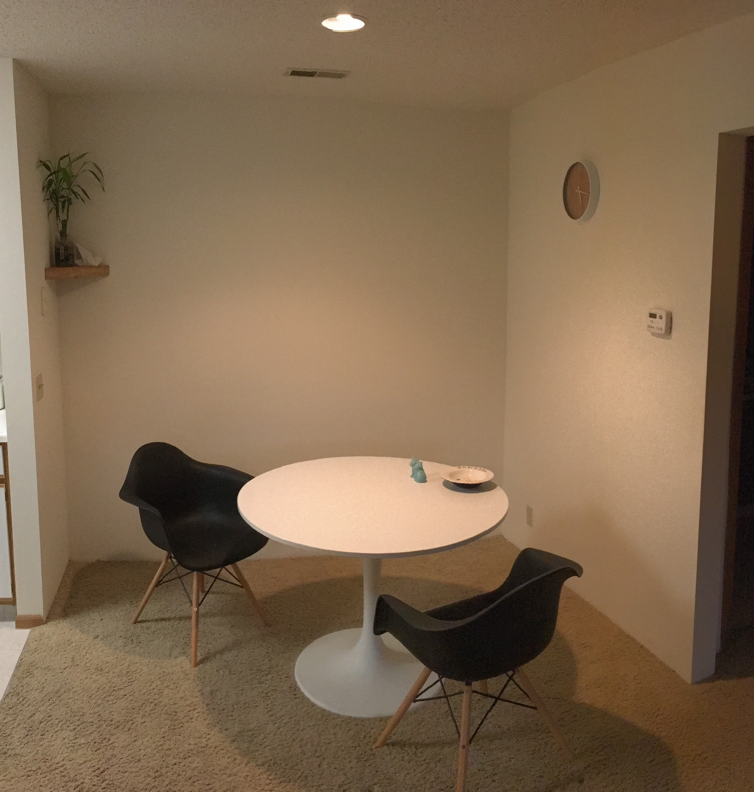
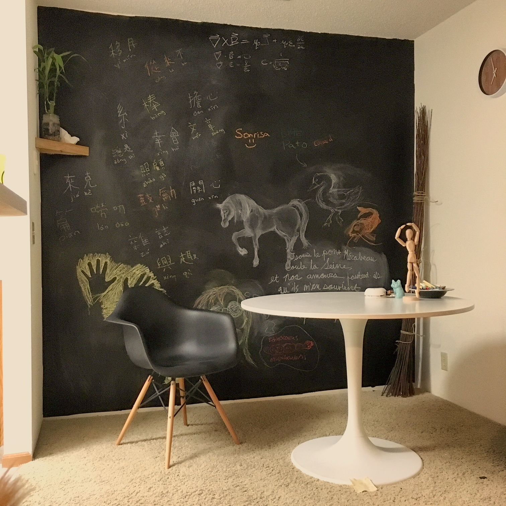

A few weeks ago I decided I wanted to paint one of my apartment walls with chalkboard paint, effectively turning it into a giant chalkboard. I'd never painted a wall before but it was easier and cheaper than I originally thought!
I did a bit of reading online about how to paint a wall. Most sites suggested sanding and priming the wall first. I decided that my wall was already pretty smooth and white so I just skipped that step (results will probably vary though). A friend and I went to Menard's to pick up some painting supplies. I bought a $10 painting bundle that included the paint roller, two covers, painter's tape, and a tray. The chalkboard paint itself was $10 for a little can and I bought two of them to cover my wall.
Next I used the painter's tape to cover the edges of my wall and ceiling. I also taped newspapers to the bottom of the wall and floor (you're supposed to use a tarp but this was a lot cheaper). Starting to paint my white wall with this jet black paint was a little intimidating but once I got started it was super fun! I got a bit of paint on the neighboring wall and the carpet but it's not really a big deal. I finished the wall after about 2 hours. Even though I should have, I decided not to do a second coat of paint becuase it looked pretty okay, and I figured that once it was covered in chalk the flaws would be less noticeable.
Next I had to wait two days for the paint to dry enough to draw on it with chalk. Before drawing on the surface, I had to condition it by rubbing the long end of a piece of chalk all over the wall and then erasing it. Next I got started drawing on my wall! The first time drawing on the chalkboard paint was a bit difficult and I should've sanded the wall first because the wall was slightly bumpy. However, it seems like the more you draw on the wall, the easier it gets. I had some artistic friends over and ended up with this!
Questions? Comments? Don't hesitate to contact me!